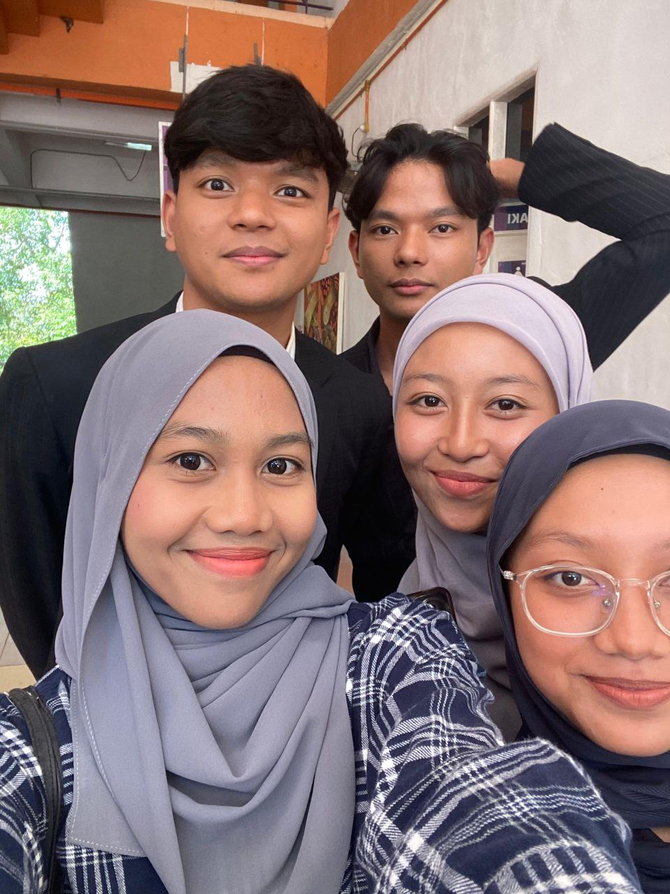
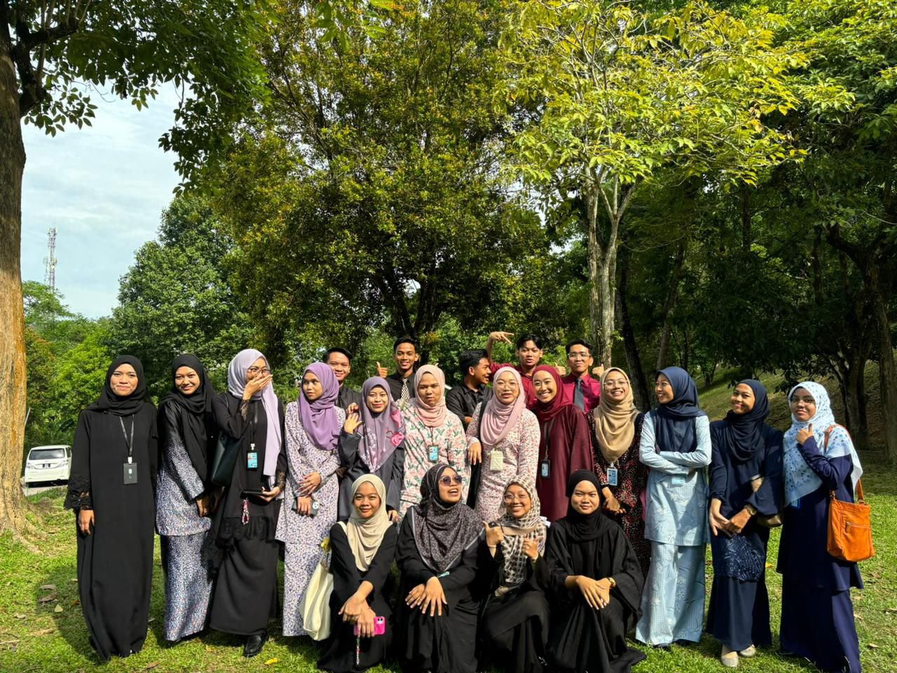
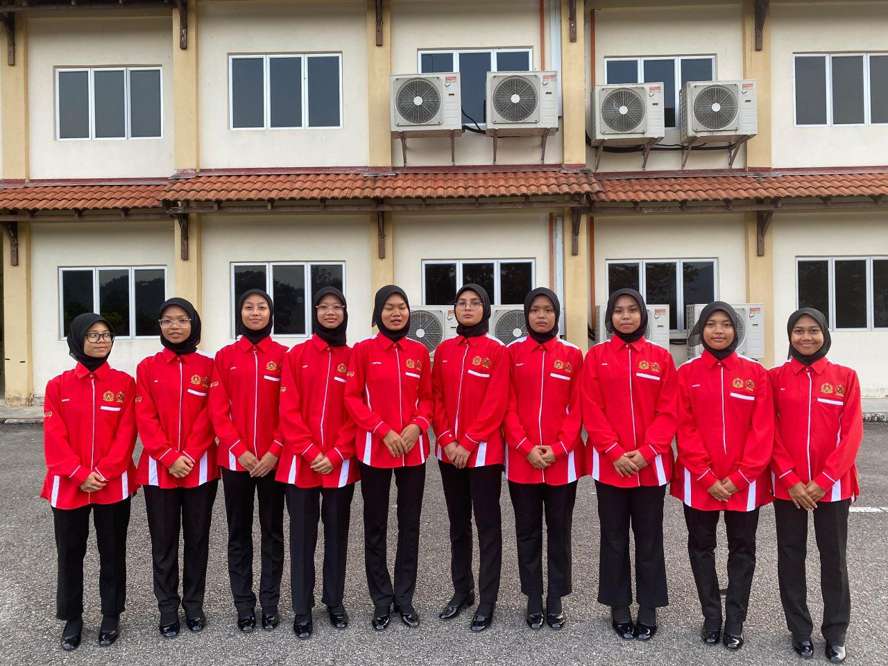

Welcome to my website !



"The journey of a thousand miles begins with one step," said Lao Tzu, a reminder that every educational path starts with a single decision to learn. Throughout my study journey, I have found solace in Nelson Mandela's words, "Education is the most powerful weapon which you can use to change the world." These words fueled my determination during challenging times, inspiring me to persevere. Albert Einstein once said, "The only source of knowledge is experience," which guided me to seek practical opportunities alongside theoretical learning. Finally, Confucius' wisdom, "It does not matter how slowly you go as long as you do not stop," taught me the value of persistence and patience. These quotes have been my guiding stars, illuminating the path of my educational endeavors and reminding me that every step, no matter how small, is a crucial part of the journey.